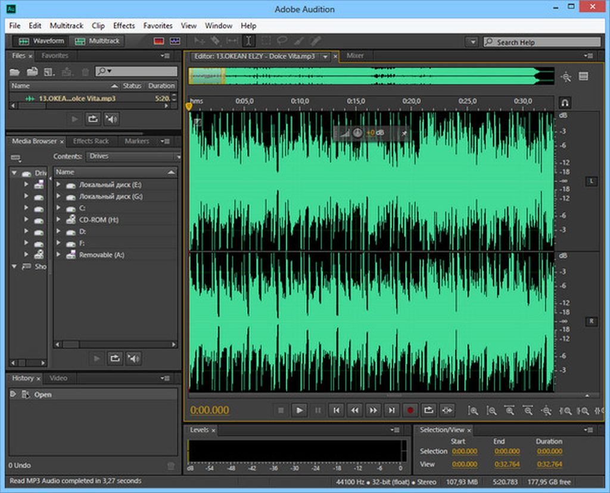
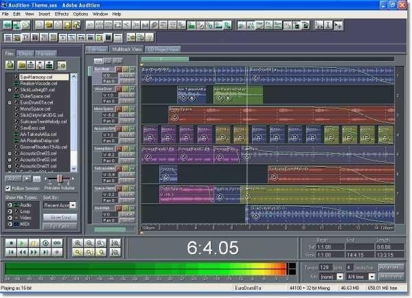

Programos Adobe Audition CC langas Windows operacinėje sistemoje

Adobe Audition. Tai yra profesionali garso apdorojimo ir redagavimo programa.
Adobe Audition CC programos naudojamas

. Šią programą galima
naudot turiniuii:
kurti, maišyti, redaguoti ir atkurti.;
maišyti, redaguoti
redaguoti
atkurti
Adobe Audition CC failų formatai
Galima importuoti tokius failus kaip AAC, AIFF, AU, FLAC, MP3.
Adobe Audition CC pamoka pradentiesiams